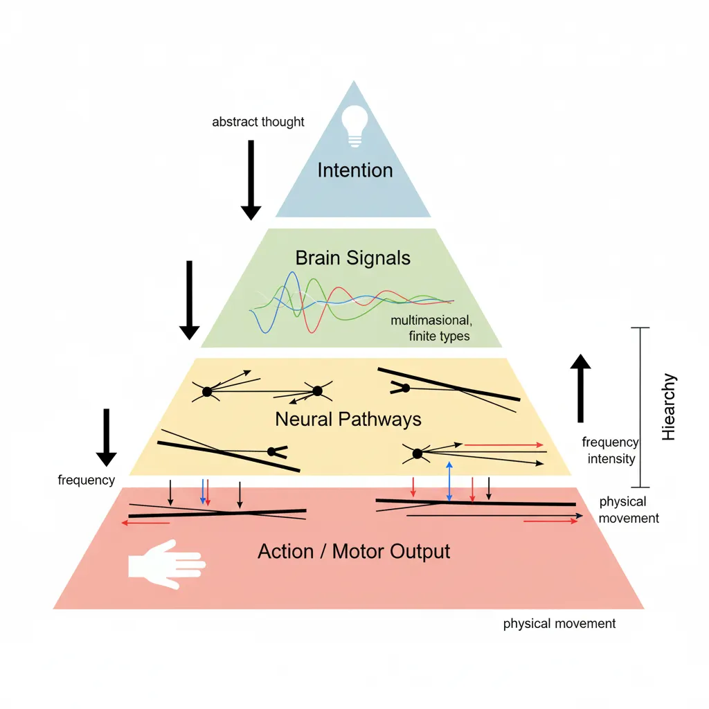
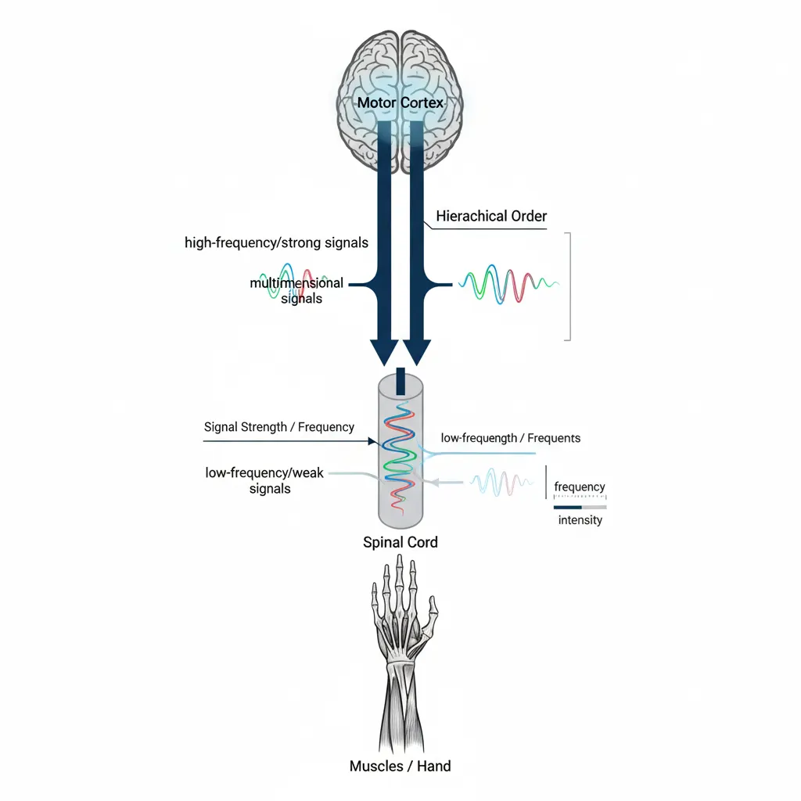
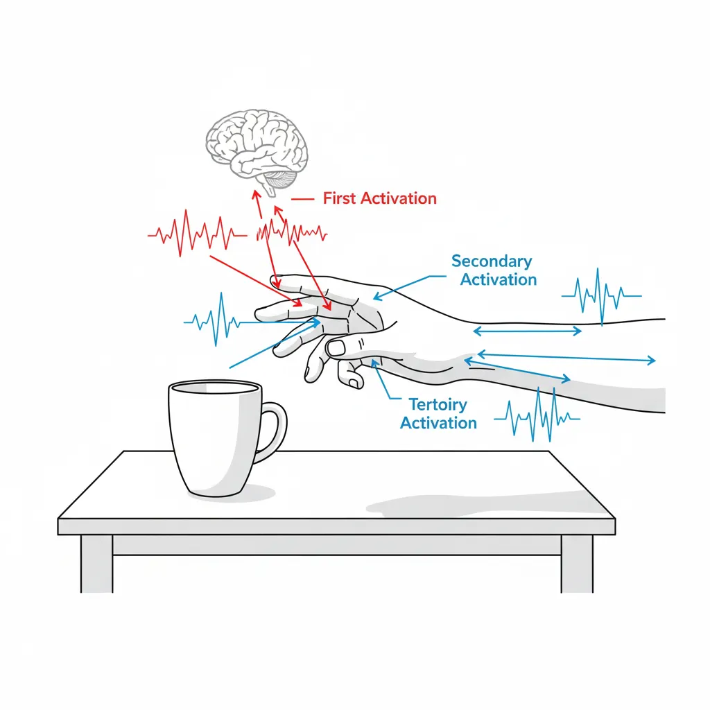
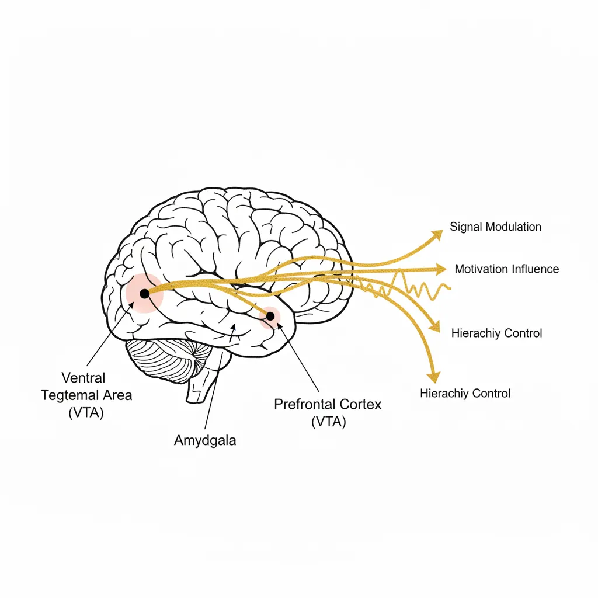
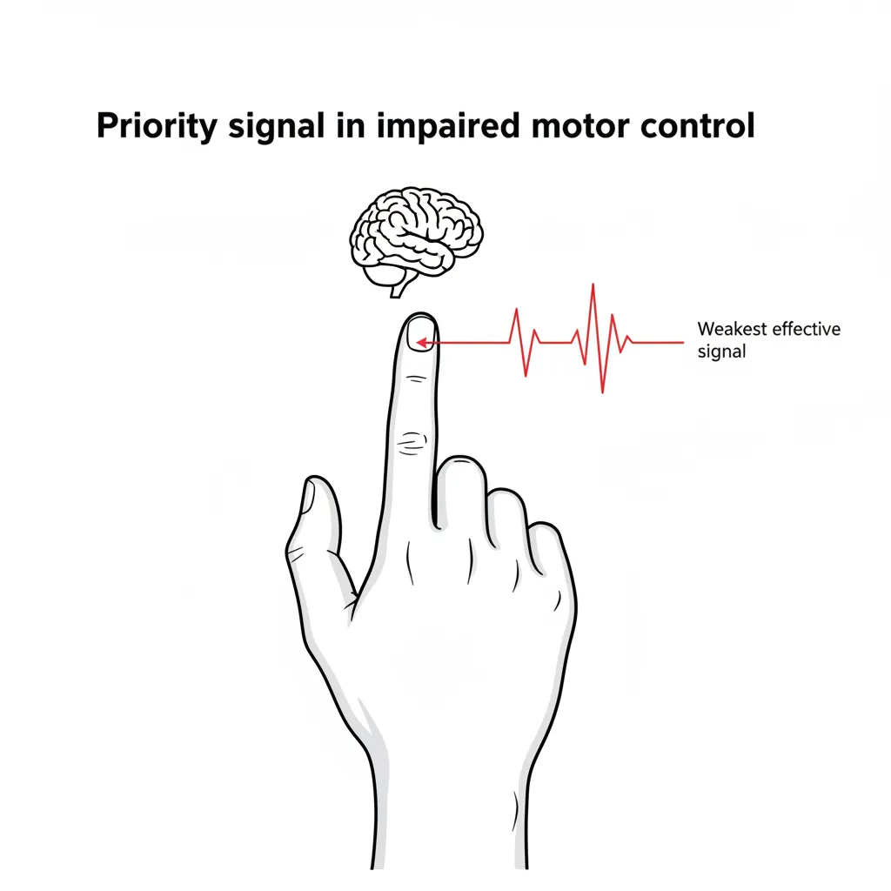
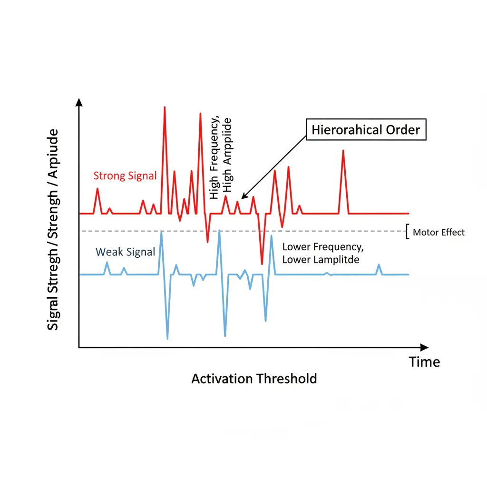

The Suspected Hierarchy of Human Intentions and Brain Signals, and How They Behave in Conflict and in Odds
Exploring how the brain organizes movement signals in a hierarchy of purpose, strength, and frequency
Originally published on Medium
"When something becomes complex enough, consciousness happens."
I have been thinking about how our brain might not just send signals randomly or in one straight line, but instead in something like a hierarchy of purpose. By this I mean, when we want to do something, the brain probably decides which signal is more important and then sends them in a certain order and strength.


Main Points I Believe
- The brain doesn't have a ready-made list that says: "this signal should be at this frequency" or "this muscle will always get this strength of signal." It feels more flexible.
- I think there are only a limited number of types of signals, but they can change in frequency, strength, or maybe even shape depending on what the body needs.
- The reward system, like dopamine and the amygdala, could be controlling how strong or frequent the signals are. This might be why effort, motivation, and movement feel connected.


Scenario 1: Picking Up a Cup
When I think about picking up a cup of coffee, the brain probably sends signals in a certain order. The fingers might get activated first, then the rest of the hand, and so on. I imagine that stronger signals move faster and get there first. I know that's not exactly how neuroscience explains it, but it makes sense if you think of signals as having both strength and speed.

Here is a one image that I assume as the brain signals in a very conceptual and mechanical sense,

Please note that this image was created using Adobe Photoshop, and may not meet scientific standards.
Scenario 2: Disabled Person Trying to Move
If someone has brain damage or a disorder, sometimes they can't move their whole hand but maybe one finger (like the index finger) still moves first. I think this happens because the brain sends out the weakest signal it can still manage, and even though that signal would normally be considered too weak, in that situation it becomes the strongest one available. It could still have good amplitude, even if the "bandwidth" is very low.
Why I Think This Is Important
- For neuroscience: Maybe this means our brain organizes movement not just by firing neurons but by creating a whole hierarchy of which signal goes first and how strong it is.
- For medicine: It could explain how people with brain injuries sometimes recover partial movements and why certain signals show up first.
- For technology: Maybe this could help design AI or robotics systems that work with limited "signal types" but still adapt like the brain.
Conclusion
So my main idea is that brain signals aren't just one-dimensional. They work in a hierarchy, with strength, frequency, and purpose all mixing together. The reward system could also be tied to how this works. I don't know the exact terms for all of this yet, but I believe it's a new way to think about how the brain communicates.
Author's Note: This is my first publication. It might contain corrupted ideas and misaligned thoughts, but I'll keep improving. Please do not hesitate to use the comment section to share your thoughts so that I can improve and focus more. That's all I need. Thanks.